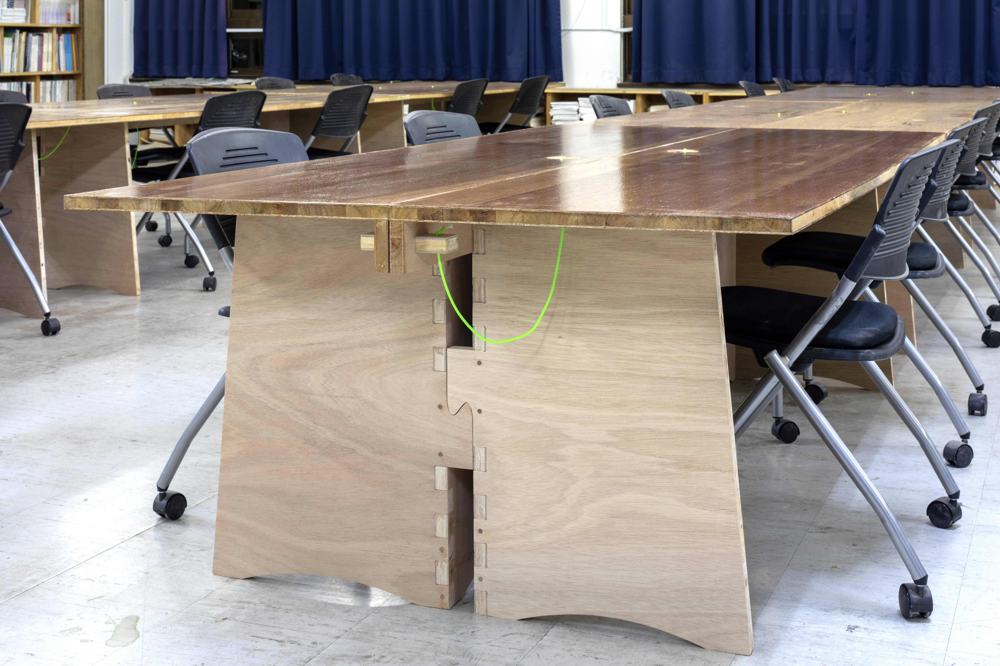
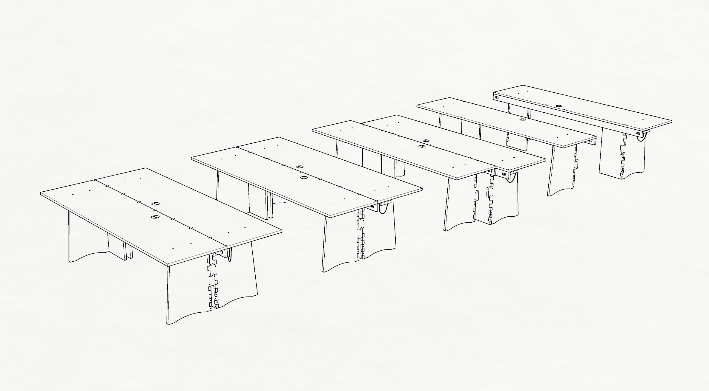
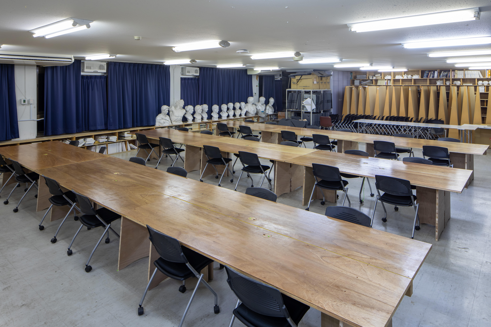
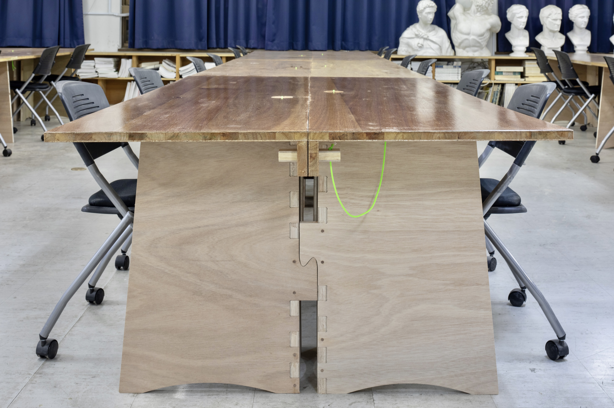
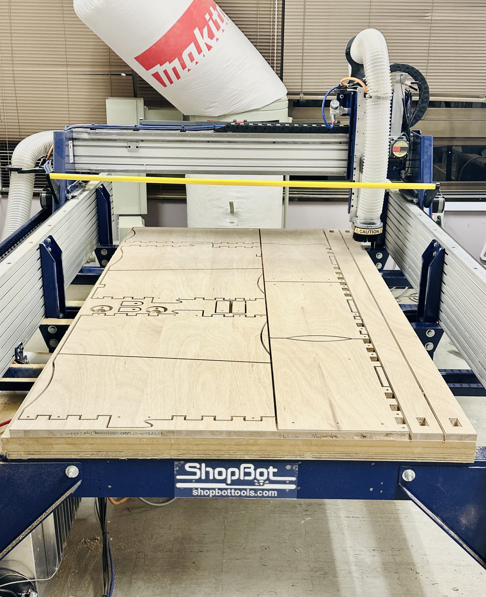
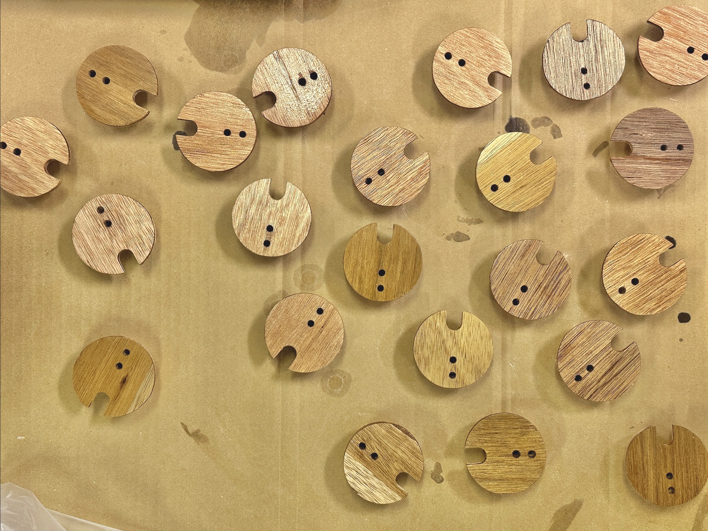
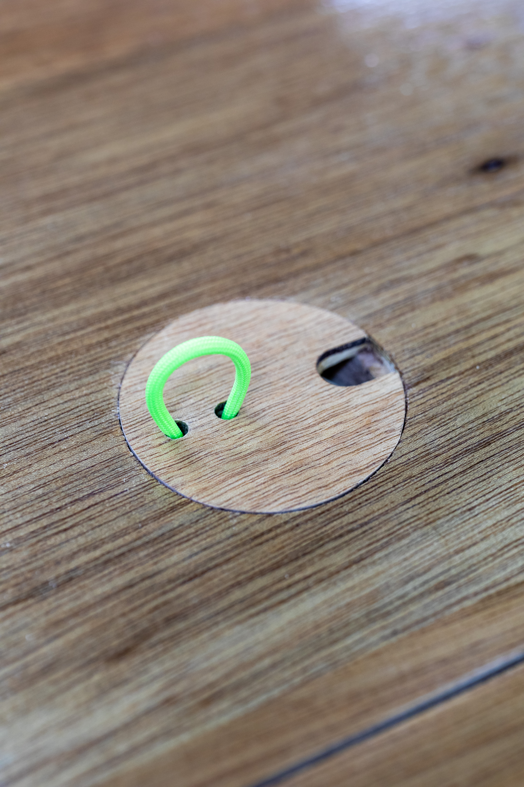

てとてテーブル Handshake Table

Photo by Hayato Kurobe
大学施設のための作業机を設計・制作した。
通常時はのびのびと使える大きな作業台として、展示などの際には半分に分割して作品を陳列したりと、製図室の多様な使われ方に応じて形を変えることができる。
A worktable designed for university facilities. In its standard configuration, it serves as a large workbench that can be used spaciously. For exhibitions and other occasions, it can be divided into two halves to display works, allowing it to adapt to the diverse ways a drafting studio is used.


Photo by Hayato Kurobe
金具を用いずに、机同士をしっかりと簡単に繋げることができる機構を考えていくと、自然と机同士が手と手を取り合うような形が導かれ、共創の場としての製図室にどこか共鳴するような印象が生まれた。
In developing a mechanism that allows the tables to be securely and easily connected without hardware, an impression naturally emerged of the tables joining hands with one another.

Photo by Hayato Kurobe
Optimal Design
必要な台数を限られた期間と作業スペースで完成させる必要があること、さらに地上4階に設置されたファブリケーションルームで加工する必要があったことから、端材の運搬量の削減と、作業効率性の観点で、極限まで歩留を高めることを意識して設計を進めた。
最終的に、一台あたり合板2枚を無駄なく使い切ることができた。
Because the required number of tables had to be completed within limited time and workspace—and fabricated in a fourth-floor fabrication room—we designed them to maximize material yield, reducing both offcut transport and on-site work.
Ultimately, each table uses two sheets of plywood with no waste.

Parts layout
Gallery


Made with ShopBot
🖥️